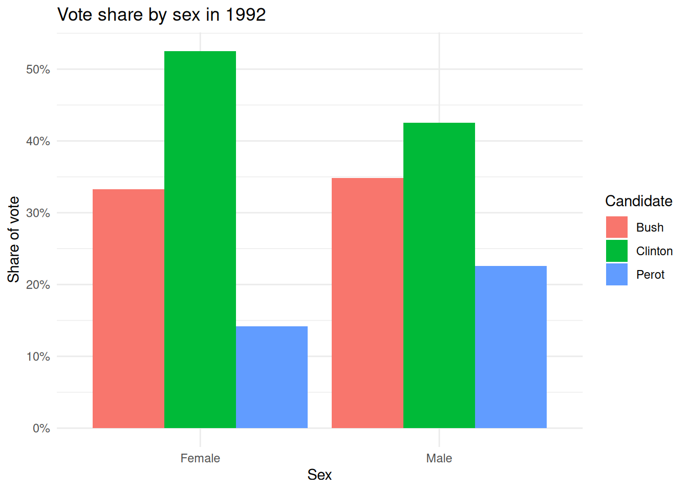
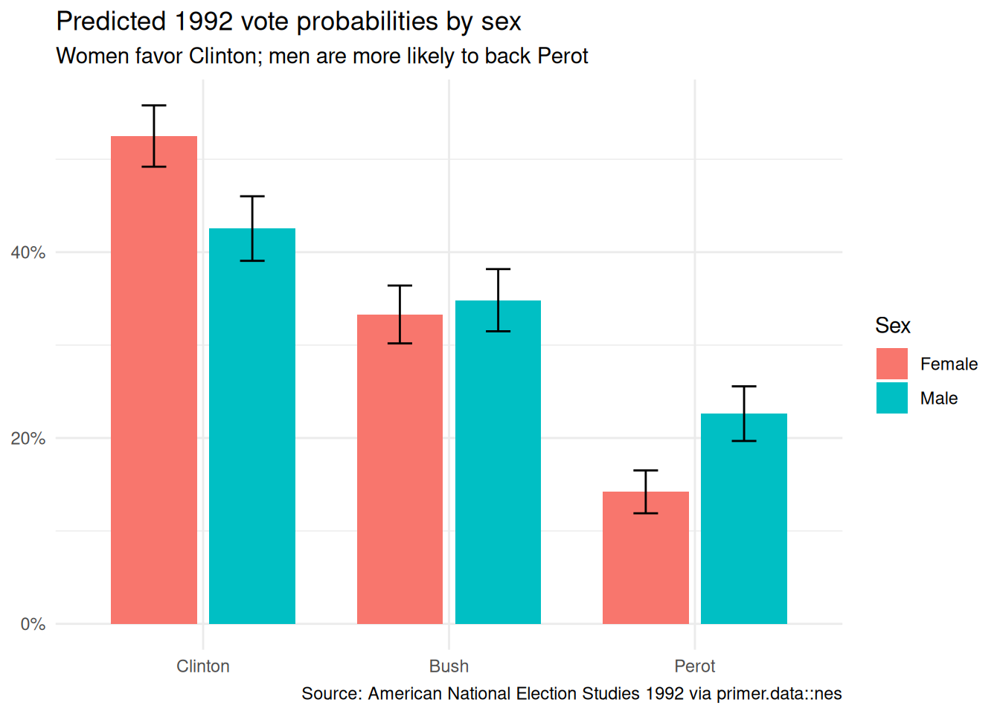

# A tibble: 1,658 × 2
sex pres_vote
<chr> <fct>
1 Female Bush
2 Female Bush
3 Female Clinton
4 Male Bush
5 Female Clinton
6 Female Clinton
7 Female Perot
8 Male Bush
9 Female Bush
10 Male Perot
# ℹ 1,648 more rowsNES
Wisdom
The goal is to understand how the 1992 presidential vote differed by sex.
── Attaching core tidyverse packages ──────────────────────── tidyverse 2.0.0 ──
✔ dplyr 1.2.1 ✔ readr 2.2.0
✔ forcats 1.0.1 ✔ stringr 1.6.0
✔ ggplot2 4.0.3 ✔ tibble 3.3.1
✔ lubridate 1.9.5 ✔ tidyr 1.3.2
✔ purrr 1.2.2
── Conflicts ────────────────────────────────────────── tidyverse_conflicts() ──
✖ dplyr::filter() masks stats::filter()
✖ dplyr::lag() masks stats::lag()
ℹ Use the conflicted package (<http://conflicted.r-lib.org/>) to force all conflicts to become errors
Attaching package: 'scales'
The following object is masked from 'package:purrr':
discard
The following object is masked from 'package:readr':
col_factor
Exercise 1
In my own words, Wisdom means starting with a clear question, identifying the relevant data, and using careful reasoning to connect the data to a useful answer without overclaiming.
Exercise 2
A Preceptor Table is a simplified data table that includes only the units, the outcome, and the covariates needed to answer the question of interest.
Exercise 3
The analysis tibble was built with the requested filtering, selection, missing-data removal, and recoding from party labels to candidate names.
Exercise 4
The code above plots the share of each candidate’s vote within each sex and labels the y-axis as a percentage.
Exercise 5
In general, a Preceptor Table has units, one or more outcomes, and one or more covariates. The units are the things being studied, the outcomes are the variables we want to predict, and the covariates are the characteristics we use to explain or compare them.
Exercise 6
The units are the individual voters who cast a ballot for Clinton, Bush, or Perot in the 1992 election.
Exercise 7
The outcome variable is the reported presidential vote, recorded as Clinton, Bush, or Perot.
Exercise 8
A useful covariate would be party identification, because it often helps explain voting behavior.
Exercise 9
There are no treatments in this problem; the analysis compares groups defined by sex rather than imposing an intervention.
Exercise 10
The Preceptor Table refers to the moment of the 1992 election, when the vote was cast.
Exercise 11
The Preceptor Table for this problem has one row for each voter who chose Clinton, Bush, or Perot, with the outcome equal to the vote choice and the covariate equal to sex.
Exercise 12
The 1992 election was a three-way contest, and the patterns of voting by sex show that men and women reported different candidate preferences. Using data from the American National Election Studies, we examine whether the probability of voting for Perot differed between men and women in that election.
Justice
Justice focuses on whether the data and the model are appropriate for making inferences about the population and the Preceptor Table.
Exercise 1
Validity means that the variables in the data really measure the concepts they are supposed to represent.
Exercise 2
One reason validity might not hold is that the outcome variable is based on self-reported vote recall, which can be inaccurate.
Exercise 3
A Population Table is a table of all the relevant unit/time combinations in the population, not just the sampled rows or the rows described by the question.
Exercise 4
The rows are the individual voters in the 1992 presidential election, with one row for each voter in the population and the data sample.
Exercise 5
Stability means that the relationship between the covariate and the outcome is similar across the relevant contexts and time periods.
Exercise 6
Stability might not hold if the relationship between sex and vote choice changed across the election period or across different survey conditions.
Exercise 7
Representativeness means that the data are a reasonable sample of the population so that conclusions about the population are credible.
Exercise 8
Representativeness might not hold if the ANES respondents differ from the full electorate in important ways, such as turnout or willingness to participate.
Exercise 9
Representativeness might also fail when the population and the Preceptor Table differ in composition, even if they share the same broad time frame.
Exercise 10
Because the outcome has three unordered categories, the correct probability family is a multinomial distribution.
Exercise 11
For a multinomial outcome, the link function is the multinomial logit link.
Exercise 12
A potential weakness of the model is that it uses only sex as a predictor, so it may miss important variation in voting behavior that is related to party identification, ideology, or other demographics.
Courage
Courage focuses on estimating the model and interpreting the fitted parameters.
# A tibble: 4 × 8
y.level term estimate std.error statistic p.value conf.low conf.high
<chr> <chr> <dbl> <dbl> <dbl> <dbl> <dbl> <dbl>
1 Clinton (Intercept) 0.455 0.0747 6.10 1.08e- 9 0.309 0.602
2 Clinton sexMale -0.255 0.111 -2.30 2.12e- 2 -0.473 -0.0381
3 Perot (Intercept) -0.852 0.107 -7.97 1.54e-15 -1.06 -0.642
4 Perot sexMale 0.420 0.144 2.91 3.56e- 3 0.138 0.703 | Multinomial model estimates | |||||||
| American National Election Studies, 1992 | |||||||
| Outcome | Term | Estimate | SE | statistic | p-value | Lower CI | Upper CI |
|---|---|---|---|---|---|---|---|
| Clinton | (Intercept) | 0.46 | 0.07 | 6.097689 | 0.000 | 0.31 | 0.60 |
| Clinton | sexMale | −0.26 | 0.11 | -2.304009 | 0.021 | −0.47 | −0.04 |
| Perot | (Intercept) | −0.85 | 0.11 | -7.973956 | 0.000 | −1.06 | −0.64 |
| Perot | sexMale | 0.42 | 0.14 | 2.914966 | 0.004 | 0.14 | 0.70 |
Exercise 1
Courage means fitting a model that is appropriate for the data, interpreting the estimates carefully, and being willing to explain what the model does rather than hiding behind vague claims.
Exercise 2
The model specification begins with multinom_reg(engine = "nnet").
Exercise 3
The fitted intercept-only model is built with fit(pres_vote ~ 1, data = nes_92).
Exercise 4
The Clinton intercept of 0.34 means that, relative to Bush and without any covariates, the log-odds of Clinton versus Bush are about 0.34.
Exercise 5
The final model is fit with fit(pres_vote ~ sex, data = nes_92).
Exercise 6
The Perot sexMale estimate of 0.42 means that, relative to Bush, men have higher log-odds of Perot than women do.
Exercise 7
The fitted object is assigned to fit_nes so the model can be reused for later analysis steps.
Exercise 8
Caching the fitted model avoids recomputing it on every render and saves time.
Exercise 9
The cached chunk creates an analysis_cache/ directory next to the Quarto document.
Exercise 10
The cache directory should be added to .gitignore so it does not get committed to GitHub.
Exercise 11
The fitted model defines the data generating mechanism: two log-odds equations relative to Bush that translate into three probabilities summing to one for each voter.
Exercise 12
The tidy() output provides confidence intervals for each parameter on the Bush-relative log-odds scale.
Exercise 13
The table code above produces a polished summary of the fitted model parameters with a title, caption-like header, and rounded values.
Exercise 14
A useful summary sentence is that the model uses a multinomial logit structure with separate Bush-relative log-odds equations for Clinton and Perot, and sex shifts those equations for men versus women.
Temperance
Temperance turns the fitted model into answers on the outcome scale.
# A tibble: 6 × 11
rowid group estimate std.error statistic p.value s.value conf.low conf.high
<int> <fct> <dbl> <dbl> <dbl> <dbl> <dbl> <dbl> <dbl>
1 1 Bush 0.333 0.0159 21.0 1.57e- 97 322. 0.302 0.364
2 2 Bush 0.348 0.0171 20.4 1.95e- 92 305. 0.315 0.382
3 1 Clint… 0.525 0.0168 31.2 1.60e-213 707. 0.492 0.558
4 2 Clint… 0.425 0.0177 24.0 2.66e-127 420. 0.391 0.460
5 1 Perot 0.142 0.0118 12.1 1.51e- 33 109. 0.119 0.165
6 2 Perot 0.226 0.0150 15.1 2.13e- 51 168. 0.197 0.256
# ℹ 2 more variables: sex <chr>, df <dbl>
Group Estimate Std. Error z Pr(>|z|) S 2.5 % 97.5 %
Bush 0.0154 0.0233 0.659 0.51 1.0 -0.0303 0.0611
Clinton -0.0996 0.0244 -4.073 <0.001 14.4 -0.1475 -0.0516
Perot 0.0842 0.0191 4.415 <0.001 16.6 0.0468 0.1215
Term: sex
Type: probs
Comparison: Male - Female
Exercise 1
The setup chunk now includes library(marginaleffects).
Exercise 2
The specific question is: what is the difference in the probability of voting for Perot between men and women in 1992?
Exercise 3
The predictions chunk uses predictions(extract_fit_engine(fit_nes), newdata = data.frame(sex = c("Female", "Male"))).
Exercise 4
The comparisons chunk uses avg_comparisons(extract_fit_engine(fit_nes), variables = "sex").
Exercise 5
The predictions tibble is saved as preds, then printed for further plotting.
Exercise 6
The plot code above creates a grouped bar plot of predicted vote probabilities, with error bars showing the 95% intervals.
Exercise 7
The final graphic chunk is the one that builds the main plot used for interpretation.
Exercise 8
A final sentence for the summary paragraph could be: we estimate that men were about 8 percentage points more likely than women to vote for Perot, with a 95% interval that excludes zero.
Exercise 9
The estimate could be wrong because the data are self-reported and the model uses only sex as a predictor, so it may miss other important drivers of vote choice.
Exercise 10
The material is arranged so the graphic appears before the summary paragraph, and the fit_nes chunk comes before the graphic chunk.
Exercise 11
Publishing the rendered Quarto document to GitHub Pages would require running quarto publish gh-pages analysis.qmd in the bash terminal.
Exercise 12
The repository URL would be the GitHub Pages URL for the rendered document, which depends on the repository settings and the branch.